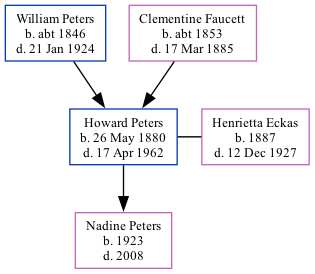

Howard Hepple Peters 1880 - 1962
[ Home ] | [ Calendar ] | [ Surnames Index ] | [ Family History ]The younger of 2 children of William Peters and Clementine FaucettHoward Peters, the third cousin twice-removed on the father's side of Nigel Horne, was born in Kent, New Brunswick, Canada on May 26, 18801 and married Henrietta Eckas (with whom he had 1 child, Nadine Anita, ) in King, Washington, USA in 19152. In 1881, he lived in Richibucto, New Brunswick1.
He died on Apr 17, 1962 in the USA.
Parents
- William Fletcher was born c. 1846
- Clementine was born c. 1853
Children
- Nadine Anita was born in 1923
Citations
- Canada Census 1881 - Findmypast (was age 1)
- United States Marriages - Findmypast
Media
Canada Census 1881 - CAN/CENSUS/1881/00363831
United States Marriages - US/FS/M/090611497/1
United States Marriages - R_106135031334/1
United States Marriages - US/FS/M/008452610/1
Family Tree
Generated by ged2site. Last updated on Nov 13, 2024